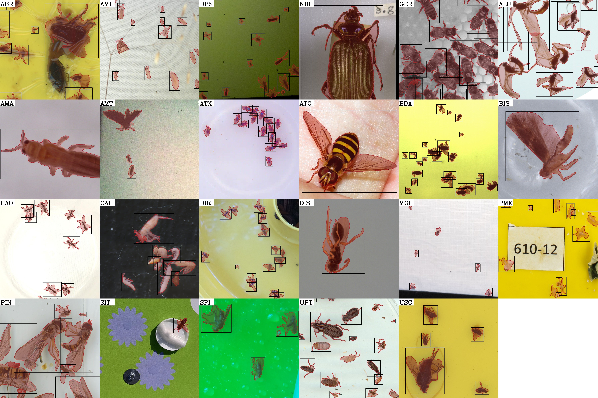

flatbug ¶
A General Method for Detection and Segmentation of Terrestrial Arthropods in Images ¶


flatbug is partly a high-performance pyramid tiling inference wrapper for YOLOv8 and partly a hybrid instance segmentation dataset of terrestrial arthropods accompanied by an appropriate training schedule for YOLOv8 segmentation models, built on top of the original YOLOv8 training schedule.
The goal of flatbug is to provide a single unified model for detection and segmentation of all terrestrial arthropods on arbitrarily large images, especially fine-tuned for the case of top-down images/scans - thus the name "flat"bug.
Installation¶
Installation via package managers coming later.
Source/development¶
Or a development version can be installed from source by cloning this repository:
git clone git@github.com:darsa-group/flat-bug.git
cd flat-bug
pip install -e .
However, as with other packages built with PyTorch it is best to ensure that torch is installed separately. See https://pytorch.org/ for details. We recommend using torch>=2.3.
CLI Usage¶
We provide a number of CLI scripts with flatbug. The main one of interest is fb_predict, which can be used to run inference on images or videos:
fb_predict -i <DIR_WITH_IMGS> -o <OUTPUT_DIR> [-w <WEIGHT_PATH>] ...
Tutorials¶
We provide a number of tutorials on general and advanced usage, training, deployment and hyperparameters of flatbug in examples/tutorials or with Google Colab  .
.
Documentation¶
Find our documentation at https://darsa.info/flat-bug/.
Contents¶
- CLI API
- Augmentations
- Coco utilities
- Configuration
- Datasets
- Evaluation utilities
bbox_intersect()bbox_intersect_area()best_confidence_threshold()compare_groups()contour_intersection()equal_spaced_cuts()f1_score()format_cell()format_row()generate_block()generate_bootstraps()match_geoms()optimal_threshold_f1()pairwise_contour_intersection()plot_heatmap()plot_matches()pretty_print_csv()
- Geometry utilities
- Non-maximum suppression
- Predictor
- Trainers
- YOLO helpers